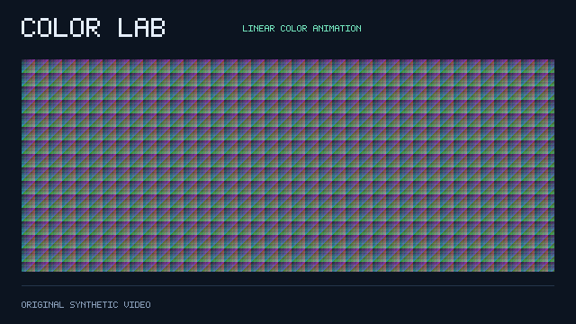
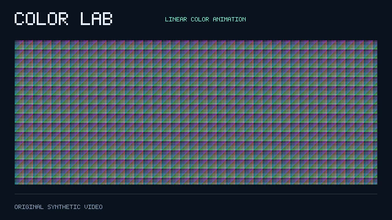
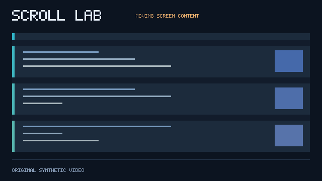
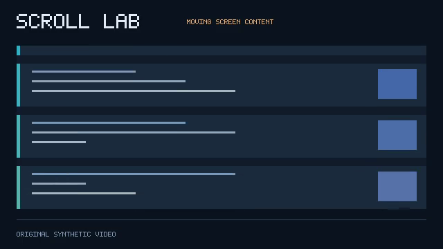

TimeFlowCodec · Reproducible proof case · October 8, 2026
One kind of video.
Every RGB pixel preserved.
An original color-ramp animation demonstrates where native per-pixel temporal modeling can use fewer bytes than conventional lossless video encoding.
99.55% smaller
Than libx264rgb / veryslow / CRF 0 on this exact-RGB synthetic case. Both decodes match every original pixel.
This animation was intentionally designed with linear per-pixel color changes. It is a favorable proof case, not evidence of universal 60% savings or superiority on camera footage. The scrolling comparison is retained below.
Download the 16-second presentation video · Raw results and commands · Reproduction guide · Media license
01 / Temporal color ramps
640 × 360 · 160 frames · 20 FPS · 8 seconds · no audio
Browser viewing proxy only. All measurements use original RGB frames and actual decoded files.
| Method | Total bytes | Measured quality | Download |
|---|
| FFV1 lossless master | 29,005,591 | Exact RGB — every pixel | File |
| TFC native RGB | 49,948 | Exact RGB — every pixel | File |
| H.264 RGB lossless | 10,998,800 | Exact RGB — every pixel | File |
| AV1 RGB lossless | 913,981 | Exact RGB — every pixel | File |
| H.264 YUV444 CRF 18 | 274,262 | 36.06 dB RGB PSNR | File |
| H.264 YUV420 CRF 23 | 134,383 | 25.09 dB RGB PSNR | File |
| HEVC YUV444 CRF 18 | 663,181 | 38.16 dB RGB PSNR | File |
Inspect original, TFC, and H.264 YUV420 frame 24

Original RGB Decoded TFC RGB
Decoded TFC RGB
Decoded H.264 YUV420 / CRF 23These PNGs are actual decoded samples. Lossy settings are context, not matched-quality anchors.
02 / Scrolling screen control
640 × 360 · 160 frames · 20 FPS · 8 seconds · no audio
Browser viewing proxy only. All measurements use original RGB frames and actual decoded files.
| Method | Total bytes | Measured quality | Download |
|---|
| FFV1 lossless master | 1,566,903 | Exact RGB — every pixel | File |
| TFC native RGB | 124,643 | Exact RGB — every pixel | File |
| H.264 RGB lossless | 39,718 | Exact RGB — every pixel | File |
| AV1 RGB lossless | 217,467 | Exact RGB — every pixel | File |
| H.264 YUV444 CRF 18 | 36,513 | 48.12 dB RGB PSNR | File |
| H.264 YUV420 CRF 23 | 34,088 | 39.28 dB RGB PSNR | File |
| HEVC YUV444 CRF 18 | 34,594 | 49.27 dB RGB PSNR | File |
Inspect original, TFC, and H.264 YUV420 frame 24
 Original RGB
Original RGB
Decoded TFC RGB
Decoded H.264 YUV420 / CRF 23These PNGs are actual decoded samples. Lossy settings are context, not matched-quality anchors.